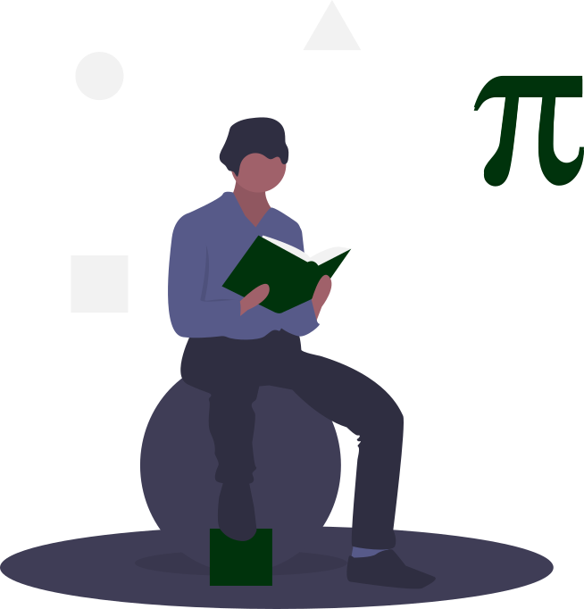

My Research
I studied the behaviour of microscopic organisms such as bacteria, asking questions like:
How efficient are bacteria compared to humans?
Can we make microscopic engines powered by bacteria?
How can simple cells navigate with remarkable precision?
These systems are small enough that they cannot be fully observed, making them both fascinating and challenging to understand. I use probability theory, stochastic calculus and computational methods in Python and C to deeply explore these remarkable natural systems.
Publications
- Optimal Power Extraction from Active Particles with Hidden States, L. Cocconi, J. Knight, C. Roberts — Phys. Rev. Lett. 131, 2023
- Memoryless chemotaxis with discrete cues, J. Knight, P. Garcia-Galindo, J. Pausch, G. Pruessner — J. R. Soc. Interface 21, 2024
- Self-propulsion symmetries determine entropy production of active particles with hidden states, J. Knight, F. Kaveh, G. Pruessner — arXiv preprint, 2025
- Hidden state inference in drift-diffusive processes via conditional splitting probabilities, E. Sezik, J. Knight, H. Alston, C. Roberts, T. Bertrand, G. Pruessner, L. Cocconi — arXiv preprint, 2025
